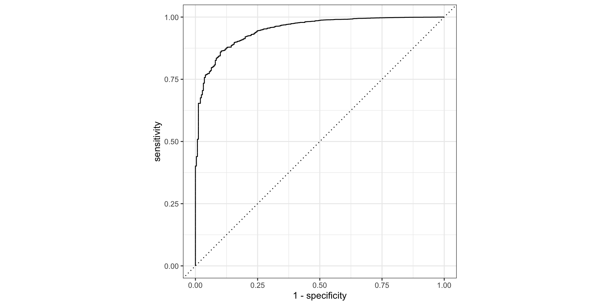
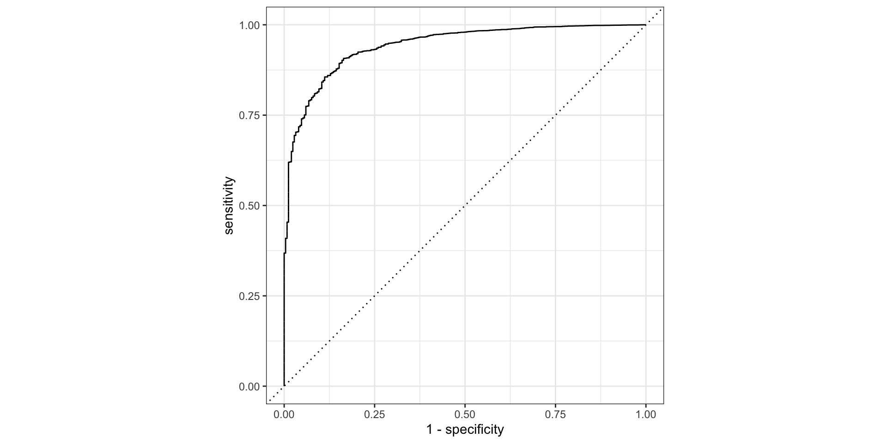

Last week we introduced the Tidymodels framework in R
We showed how we can use the Tidymodels framework to create a workflow for data prep, feature engineering, model fitting and model evaluation.
Today we look at the using the Tidymodels package to build classification and clustering models.
Classification
Classification
Classification is a supervised machine learning method where the model tries to predict the correct class label for a given input data.
In classification, the model is fully trained using the training data, and then it is evaluated on test data before being used to perform prediction on new unseen data.
Classification
Eager learners are machine learning algorithms that first build a model from the training dataset before making any prediction on future datasets. They spend more time on the training process to better generalize from the data.
They usually require less time to make predictions. Example eager learners are:
Logistic Regression.
Support Vector Machine.
Decision Trees.
Artificial Neural Networks.
Classification
Lazy learners or instance-based learners, do not create any model immediately from the training data, and this where the lazy aspect comes from. They just memorize the training data, and each time there is a need to make a prediction, they search for the nearest neighbor from the whole training data. Examples are:
Logistic regression is a Generalized Linear Model where the dependent (categorical) variable \(y\) takes values in \({0,1}\). This can be interpreted as identifying two classes, and logistic regression provides a prediction for class membership based on a linear combination of the explanatory variables.
Logistic regression is an example of supervised learning.
Binary Logistic Regression
For the logistic GLM:
the distribution of the observations is Binomial with parameter \(\pi\)
the explanatory variables are linear in the parameters: \(\eta=\beta_0+\beta_1 x_1+\beta_2 x_2+\beta_2 x_2\ldots+\beta_n x_n\)
the link function is the logit: \(\eta=\text{logit}(\pi) = \log(\frac{\pi}{1-\pi})\)
It follows that \(\pi = \frac{e^\eta}{1+e^\eta} = \frac{1}{1+e^{-\eta}}\), which is a sigmoid function in the explanatory variables. The equation \(\eta=0\) defines a linear decision boundary or classification threshold.
Binary Logistic Regression
The term \(\frac{\pi}{1-\pi}\) is called the the odds-ratio. By its definition \(\frac{\pi}{1-\pi}=e^{\beta_0+\beta_1 x_1+\beta_2 x_2+\beta_2 x_2\ldots+\beta_n x_n}\)
So if \(x_1\) changes by one unit (\(x_1\rightarrow x_1+1\)), then the odds ratio changes by \(e^{\beta_1}\).
Classifier metrics
Confusion matrix
The confusion matrix is a 2x2 table summarizing the number of correct predictions of the model:
predict 1
predict 0
data =1
true positives (TP)
false negatives (FN)1
data = 0
false positives (FP)2
true negatives (TN)
Classifier metrics
Accuracy
Accuracy measure the percent of correct predictions:
># fit the model> lm_fit <-+ default_workflow %>%+ parsnip::fit(default_train)>># augment the data with the predictions using the model fit> training_results <-+ broom::augment(lm_fit , default_train)
Example: compute the AUC
> auc_roc_tbl <- training_results %>%+# order prediction probability from high to low+ dplyr::arrange( desc(.pred_Yes) ) %>%+# make new variable for cumulative % of 'Yes' category+ dplyr::mutate( +# scale to percent (# of all 'Yes' categories)+y =ifelse(default =="Yes", 1/sum(default =="Yes"),0)+# accumulate the values+ , y =cumsum(y)+ ) %>%+# keep the 'No' category values+ dplyr::filter(default =="No") %>%+# number rows & scale to % of total; compute incremental areas+ tibble::rowid_to_column("ID") %>%+ dplyr::mutate(+auc_inc = y /max(ID) # multiply the height by the width+ , ID = ID /max(ID) # scale to percent (# of all 'No' categories)+ )
> training_results %>% yardstick::roc_curve(.pred_No, truth = default) %>%autoplot()

Other Classification Methods
Naive Bayes Classification
This method starts with Bayes rule: for \(K\) classes and \(N\) features, since \(\mathbb{P}\left[\left.C_{k}\right|x_{1},\ldots,x_{N}\right]\times\mathbb{P}\left[x_{1},\ldots,x_{N}\right]\) is equal to \(\mathbb{P}\left[\left.x_{1},\ldots,x_{N}\right|C_{k}\right]\times\mathbb{P}\left[C_{k}\right]\), we can write
So it remains to calculate the class probability \(\mathbb{P}\left[C_{k}\right]\) and the conditional probabilities \(\mathbb{P}\left[\left.x_{n}\right|C_{k}\right]\)
The different naive Bayes classifiers differ mainly by the assumptions they make regarding the conditional probabilities.
Naive Bayes Classification
If our features are all ordinal, then
The class probabilities are simply the frequency of instances that belong to each class divided by the total number of instances.
The conditional probabilities are the frequency of each feature value for a given class value divided by the frequency of instances with that class value.
Naive Bayes Classification
If any features are numeric, we can estimate conditional probabilities by assuming that the numeric features have a Gaussian distribution for each class
Naive Bayes Classification
Code
>library(discrim)># create a naive bayes classifier> default_model_nb <- parsnip::naive_Bayes() %>%+ parsnip::set_engine("klaR") %>%+ parsnip::set_mode("classification")>># create a workflow> default_workflow_nb <- workflows::workflow() %>%+ workflows::add_recipe(default_recipe) %>%+ workflows::add_model(default_model_nb)>># fit the model> lm_fit_nb <-+ default_workflow_nb %>%+ parsnip::fit(+ default_train+ , control =+ workflows::control_workflow(parsnip::control_parsnip(verbosity = 1L))+ )>># augment the data with the predictions using the model fit> training_results_nb <-+ broom::augment(lm_fit_nb , default_train)
> training_results_nb %>% yardstick::roc_curve(.pred_No, truth = default) %>%autoplot()

Tidymodels
Key Components of Tidymodels
Resampling: Efficient methods for handling data splitting, cross-validation, bootstrapping, and more.
Metrics: A wide range of evaluation metrics to assess model performance and choose the best model.
Fitting with parsnip
We’ve seen how the form of the arguments to linear models in R can be very different.
Parsnip is one of the tidymodels packages that provides a standardized interface across models
We look at how to fit and predict with parsnip in the next few slides, once the data has been prepped.
Fitting with parsnip
We can fit a linear regression with OLS (model spec) or penalized regression (x,y spec) using data structured specifically for the model.
By contrast the tidymodels approach is more uniform.
Fitting with parsnip
Specify the type of model based on its mathematical structure (e.g., linear regression, random forest, KNN, etc).
Specify the engine for fitting the model. Most often this reflects the software package that should be used, like lm or glmnet.
When required, declare the mode of the model. The mode reflects the type of prediction outcome. For numeric outcomes, the mode is regression; for qualitative outcomes, it is classification.
Fitting with parsnip
The specification are built without referencing the data:
tidymodel specification
># basic linear model> parsnip::linear_reg() %>% parsnip::set_engine("lm")
Linear Regression Model Specification (regression)
Computational engine: lm
tidymodel specification
># basic penalized linear model> parsnip::linear_reg() %>% parsnip::set_engine("glmnet")
Linear Regression Model Specification (regression)
Computational engine: glmnet
Fitting with parsnip
The translate function can be used to see how the spec is converted to the correct syntax for different methods
tidymodel spec translation
># basic linear model> parsnip::linear_reg() %>% parsnip::set_engine("lm") %>% parsnip::translate()
Linear Regression Model Specification (regression)
Computational engine: lm
Model fit template:
stats::lm(formula = missing_arg(), data = missing_arg(), weights = missing_arg())
Linear Regression Model Specification (regression)
Main Arguments:
penalty = 1
Computational engine: glmnet
Model fit template:
glmnet::glmnet(x = missing_arg(), y = missing_arg(), weights = missing_arg(),
family = "gaussian")
Fitting with parsnip
The translate function can be used to see how the spec is converted to the correct syntax
># prep data> data_split <- rsample::initial_split(modeldata::ames, strata ="Sale_Price")> ames_train <- rsample::training(data_split)> ames_test <- rsample::testing(data_split)># spec model> lm_model <- parsnip::linear_reg() %>% parsnip::set_engine("lm")># fit model> lm_form_fit <- lm_model %>%+# Recall that Sale_Price has been pre-logged+ parsnip::fit(Sale_Price ~ Longitude + Latitude, data = ames_train)># fit model with data in (x,y) form> lm_xy_fit <-+ lm_model %>% parsnip::fit_xy(+x = ames_train %>% dplyr::select(Longitude, Latitude),+y = ames_train %>% dplyr::pull(Sale_Price)+ )
Fitting with parsnip
Model results can be extracted from the fit object
A list of all parsnip-type models can be found here.
Tidymodels
If we use the term model to reference a a structural equation that relates some predictors to one or more outcomes, then everything before the model is fit is related to structuring the predictors and outcomes.
The model workflow refers to the broader process, including any pre-processing steps, the model fit itself, as well as potential post-processing activities. Similar collections of steps are sometimes called pipelines.
># preprocessing not specified; a formula is sufficient> lm_wflow %<>%+ workflows::add_formula(Sale_Price ~ Longitude + Latitude)>># fit the model> lm_fit <- lm_wflow %>% parsnip::fit(ames_train)>># predict on the fitted workflow> lm_fit %>% stats::predict(ames_test %>% dplyr::slice(1:3))
Tidymodels basics
In base R, the predict function returns results in a format that depends on the models.
By contrast, parsnip and workflows conforms to the following rules:
The results are always a tibble.
The column names of the tibble are always predictable.
There are always as many rows in the tibble as there are in the input data set, and in the same order.
Tidymodels basics
The predictable column names are
type value
column name(s)
numeric
.pred
class
.pred_class
prob
.pred_{class levels}
conf_int
.pred_lower, .pred_upper
pred_int
.pred_lower, .pred_upper
Tidymodels basics
The model and preprocessor can be removed or updated:
># update the formula> lm_fit %>% workflows::update_formula(Sale_Price ~ Longitude)>># remove the formula and use add_variables instead> lm_wflow %<>%+ workflows::remove_formula() %>%+ workflows::add_variables(+outcome = Sale_Price, predictors =c(Longitude, Latitude)+ )
Predictors can be selected using tidyselect selectors, e.g. everything(), ends_with(), etc.
Workflowsets
Tidymodels: workflowsets
The workflowsetpackage creates combinations of workflow components. A list of preprocessors (e.g., formulas, dplyr selectors, or feature engineering recipe objects) can be combined with a list of model specifications, resulting in a set of workflows.
Tidymodels: workflowsets
Create a set of preprocessors by formula
># set up a list of formulas> location <-list(+longitude = Sale_Price ~ Longitude,+latitude = Sale_Price ~ Latitude,+coords = Sale_Price ~ Longitude + Latitude,+neighborhood = Sale_Price ~ Neighborhood+ )>># create a workflowset> location_models <-+ workflowsets::workflow_set(+preproc = location, models =list(lm = lm_model)+ )>># view> location_models$info[[1]]># extract> workflowsets::extract_workflow(location_models, id ="coords_lm")
Tidymodels: workflowsets
Create model fits
># create a new column (fit) by mapping fit against the data in the info column> location_models %<>%+ dplyr::mutate(+fit = purrr::map(+ info+ , ~ parsnip::fit(.x$workflow[[1]], ames_train)+ )+ )>># view> location_models$fit[[1]]
Tidymodels: workflowsets
There is a convenience function called last_fit() that will fit the model to the entire training set and evaluate it with the testing set.
Similarly, collect_metrics() and collect_predictions() provide access to the performance metrics and predictions, respectively.
># get the fit metrics> workflowsets::collect_metrics(final_lm_res)>># get the predictions, post-fit> workflowsets::collect_predictions(final_lm_res) %>% dplyr::slice(1:5)
Tidymodels: workflowsets
When using predict(workflow, new_data), no model or preprocessor parameters like those from recipes are re-estimated using the values in new_data. Take centering and scaling using step_normalize() as an example. Using this step, the means and standard deviations from the appropriate columns are determined from the training set; new samples at prediction time are standardized using these values from training when predict() is invoked.
Tidymodels: workflowsets
> lm_fit %>%+# pull the parsnip object+ workflows::extract_fit_parsnip() %>%+# tidy up the fit results+ yardstick::tidy() %>%+# show the first n rows+ dplyr::slice_head(n=5)
Yardstick
Tidymodels: yardstick
Performance metrics and inference
An inferential model is used primarily to understand relationships, and typically emphasizes the choice (and validity) of probabilistic distributions and other generative qualities that define the model.
For a model used primarily for prediction, by contrast, predictive strength is of primary importance and other concerns about underlying statistical qualities may be less important.
Yardstick
Tidymodels: yardstick
Tidymodels: yardstick
Regression metrics
># fit with new data> ames_test_res <-+ stats::predict(+ lm_fit+ , new_data = ames_test %>% dplyr::select(-Sale_Price)+ )> ames_test_res>># compare predictions with corresponding data> ames_test_res <-+ dplyr::bind_cols(+ ames_test_res, ames_test %>% dplyr::select(Sale_Price))> ames_test_res>> yardstick::rmse(ames_test_res, truth = Sale_Price, estimate = .pred)
There are other functions that use probability estimates, including gain_curve, lift_curve, and pr_curve.
Tidymodels: yardstick
Regression metrics: multi-class targets
The functions for metrics that use the discrete class predictions are identical to their binary counterparts.
Metrics designed to handle outcomes with only two classes are extended for outcomes with more than two classes.
Tidymodels: yardstick
Regression metrics: multi-class targets
Take sensitivity for example:
Macro-averaging computes a set of one-versus-all metrics using the standard two-class statistics. These are averaged.
Macro-weighted averaging does the same but the average is weighted by the number of samples in each class.
Micro-averaging computes the contribution for each class, aggregates them, then computes a single metric from the aggregates.
Tidymodels: yardstick
Regression metrics: multi-class targets
># load the data and convert it to a tibble> hpc_cv <- modeldata::hpc_cv %>% tibble::tibble()># compute accuracy (same as binary case)> yardstick::accuracy(hpc_cv, obs, pred)># compute matthews correlation coefficient (same as binary case)> yardstick::mcc(hpc_cv, obs, pred)>># apply the sensitivity metrics> yardstick::sensitivity(hpc_cv, obs, pred, estimator ="macro")> yardstick::sensitivity(hpc_cv, obs, pred, estimator ="macro_weighted")> yardstick::sensitivity(hpc_cv, obs, pred, estimator ="micro")
Tidymodels: yardstick
Regression metrics: multi-class targets
># multi-class estimates for probability metrics> hpc_cv %>% yardstick::roc_auc(obs, VF, F, M, L)># multi-class estimates with estimator (one of "hand_till", "macro", or "macro_weighted")> hpc_cv %>% yardstick::roc_auc(obs, VF, F, M, L, estimator ="macro_weighted")>># show metrics by groups (re-sampling in this case)> hpc_cv %>%+ dplyr::group_by(Resample) %>%+ yardstick::accuracy(obs, pred)>> hpc_cv %>%+ dplyr::group_by(Resample) %>%+ yardstick::roc_curve(obs, VF, F, M, L) %>%+autoplot()
Tidymodels: performance evaluation
Re-substitution: comparison using same training data
># create random forest model object> rf_model <-+ parsnip::rand_forest(trees =1000) %>%+ parsnip::set_engine("ranger") %>%+ parsnip::set_mode("regression")>># create a workflow using the random forest model> rf_wflow <-+ workflows::workflow() %>%+ workflows::add_formula(+ Sale_Price ~ Neighborhood + Gr_Liv_Area + Year_Built + Bldg_Type ++ Latitude + Longitude) %>%+ workflows::add_model(rf_model) >># fit the random forest model with the ames training set> rf_fit <- rf_wflow %>% parsnip::fit(data = ames_train)
Tidymodels: performance evaluation
A function to compare models
> estimate_perf <-function(model, dat) {+# Capture the names of the `model` and `dat` objects+ cl <-match.call()+ obj_name <-as.character(cl$model) # get the model name+ data_name <-as.character(cl$dat) # get the dataset name+ data_name <-gsub("ames_", "", data_name) # replace underlines++# Estimate these metrics:+ reg_metrics <-+ yardstick::metric_set(yardstick::rmse, yardstick::rsq)++ model %>%+ stats::predict(dat) %>%# predict+ dplyr::bind_cols(dat %>% dplyr::select(Sale_Price)) %>%+reg_metrics(Sale_Price, .pred) %>%+ dplyr::select(-.estimator) %>%+ dplyr::mutate(object = obj_name, data = data_name)+ }
Tidymodels: performance evaluation
Use the function on the random forest and linear models
># get performance of the random forest model (train)>estimate_perf(rf_fit, ames_train)>># get performance of the linear model (train)>estimate_perf(lm_fit, ames_train)>># get performance of the linear model (test)>estimate_perf(rf_fit, ames_test)
Tidymodels: performance evaluation
Summarize and present the performance comparison
Code
># get performance of the random forest model (train)> dplyr::bind_rows(+estimate_perf(rf_fit, ames_train)+ , estimate_perf(lm_fit, ames_train)+ , estimate_perf(rf_fit, ames_test)+ , estimate_perf(lm_fit, ames_test)+ ) %>%+ dplyr::filter(.metric =='rmse') %>%+ dplyr::select(-.metric) %>%+ tidyr::pivot_wider(+names_from = data+ , values_from = .estimate+ ) %>%+ gt::gt() %>%+ gt::fmt_number(decimals=4) %>%+ gt::tab_header(title ="Performance statistics") %>%+ gtExtras::gt_theme_espn()
Tidymodels: performance evaluation
Re-sampling: iterative comparison:
Tidymodels: performance evaluation
Re-sampling: V-fold cross validation:
In V-fold cross-validation. The data are randomly partitioned into V sets of roughly equal size (called the folds).
Larger V values result in resampling estimates with small bias but substantial variance. Smaller values of V have large bias but low variance.
>set.seed(1001)> ames_folds <- rsample::vfold_cv(ames_train, v =10)> ames_folds># rsample::analysis() and rsample::assessment() extract samples> ames_folds$splits[[1]] %>% rsample::analysis() %>%dim()
R repetitions of V-fold cross-validation reduces variance by a factor of \(1/\sqrt{\text{R}}\).
> rsample::vfold_cv(ames_train, v =10, repeats =5)
Tidymodels: performance evaluation
Re-sampling: cross validation variants: LOO and MCCV
Leave-one-out (LOO) cross-validation with a training set of \(n\) rows generates fit using \(n-1\) rows of the training set (rsample::loo_cv).
Monte carlo cross validation (MCCV) uses a fixed proportion of the training set, randomly selected on each cross validation, making the assessment sets not mutually exclusive (e.g. (rsample::mc_cv( prop=0.9, times=20 )).
Tidymodels: performance evaluation
Re-sampling: validation sets:
Validation sets are often used when the original pool of data is very large. In this case, a single large partition may be adequate to characterize model performance without having to do multiple resampling iterations.
With the rsample package, a validation set is like any other resampling object; this type is different only in that it has a single iteration.
Tidymodels: performance evaluation
Re-sampling: bootstrapping:
A bootstrap sample of the training set is a sample that is the same size as the training set but is drawn with replacement.
When bootstrapping, the assessment set is often called the out-of-bag sample.
> rsample::bootstraps(ames_train, times =5)
Tidymodels: performance evaluation
Re-sampling: resampling time:
When the data have a strong time component, a resampling method needs to support modeling to estimate seasonal and other temporal trends within the data.
For this type of resampling, the size of the initial analysis and assessment sets are specified and subsequent iterations are shifted in time
Tidymodels: performance evaluation
Re-sampling: resampling time:
Tidymodels: performance evaluation
Re-sampling: resampling time:
Two different configurations of this method:
The analysis set can cumulatively grow (as opposed to remaining the same size). After the first initial analysis set, new samples can accrue without discarding the earlier data.
The resamples need not increment by one. For example, for large data sets, the incremental block could be a week or month instead of a day.
Tidymodels: performance evaluation
Re-sampling: resampling time:
For a year’s worth of data, suppose that six sets of 30-day blocks define the analysis set. For assessment sets of 30 days with a 29-day skip, we can use the rsample package to specify:
># pull out first and last data points in the analysis dataset> time_slices$splits %>%+ purrr::map_dfr( +.f =+~rsample::analysis(.x) %>%+ dplyr::summarize(first =min(.), last =max(.))+ )># pull out first and last data points in the assessment dataset> time_slices$splits %>%+ purrr::map_dfr(+.f =~rsample::assessment(.x) %>%+ dplyr::summarize(first =min(.), last =max(.))+ )
Tidymodels: performance evaluation
Evaluation:
During resampling, the analysis set is used to preprocess the data, apply the pre-processing to itself, and use these processed data to fit the model.
The pre-processing statistics produced by the analysis set are applied to the assessment set. The predictions from the assessment set estimate performance on new data.
This sequence repeats for every resample.
Tidymodels: performance evaluation
Evaluation:
The function tune::fit_resamples is like parsnip::fit with a resamples argment instead of a data argument:
metrics: A metric set of performance statistics to compute. By default, regression models use RMSE and R2 while classification models compute the area under the ROC curve and overall accuracy.
control: A list created by tune::control_resamples() with various options.
Tidymodels: performance evaluation
Evaluation:
Control arguments are:
verbose: A logical for printing logging.
extract: A function for retaining objects from each model iteration (discussed later).
save_pred: A logical for saving the assessment set predictions.
Tidymodels: performance evaluation
Save the predictions in order to visualize the model fit and residuals:
The models created during resampling are independent of one another and can be processed in parallel across processors on the same computer.
># The number of physical cores in the hardware:> parallel::detectCores(logical =FALSE)>># The number of possible independent processes that can ># be simultaneously used: > parallel::detectCores(logical =TRUE)
Recap
In this section we have worked with the tidymodels package to build a workflow that facilitates building and evaluating multiple models.
Combined with the recipes package we now have a complete data modeling framework.